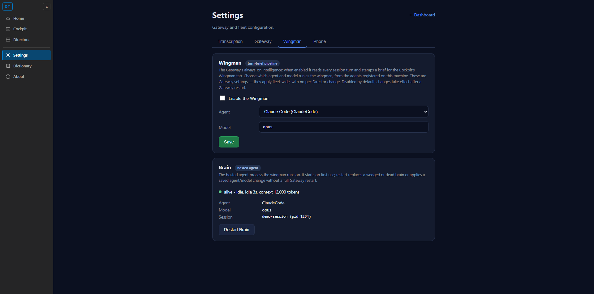
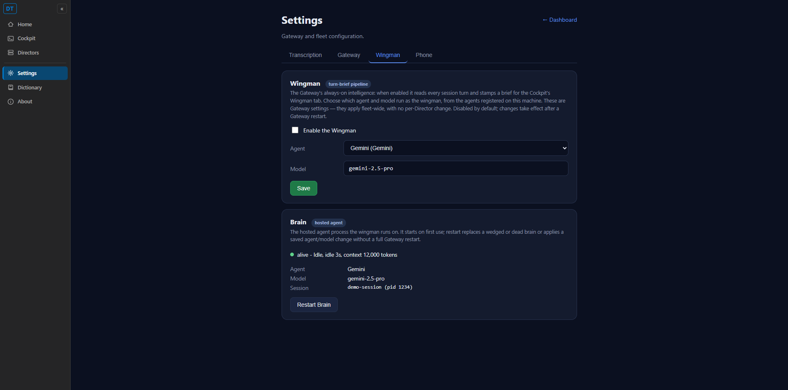

Developer Agent proof. Branch issue-510-wingman-agent-picker. Built clean (dotnet build cc-director.sln - 0 Warning(s), 0 Error(s)).
src/CcDirector.Cockpit/wwwroot/pages/settings.html): the picker label is now Agent (was "Tool"); the read-only Brain runtime status row is also relabelled "Agent" so the word "Tool" no longer appears on the tab. The dropdown is filled from the machine's registered agents, each shown as "DisplayName (Type)"; the model field is kept; Save sends the chosen agentId + model; on reload the saved agent is pre-selected.src/CcDirector.Gateway/Api/SettingsEndpoints.cs): the brain block now carries agents (the machine's enabled agent.entries, the same set the New Session dialog offers) and the saved agentId instead of a Claude-only tools list. PUT /gateway/brain/config accepts { agentId, model } (legacy { tool, model } still accepted), resolves the registered entry, and persists brain_agent_id + brain_tool + brain_model to config.json.src/CcDirector.Core/Configuration/BrainToolConfig.cs): Get() now accepts any recognised AgentKind name, not only the brain-hostable list - the wingman agent is chosen from the machine's registered agents and the driver-level hostability work landed in issue #509. The no-fallback rule still holds: an unknown/blank/non-string value still THROWS.| Criterion | How met | Proof |
|---|---|---|
| Wingman tab shows the label "Agent"; the word "Tool" no longer appears there. | Label renamed to "Agent"; the Brain status row also renamed "Agent". | PASS - screenshot below; DOM check returned wingmanTabContainsWordTool: false, agentLabel: "Agent". |
| The Agent dropdown lists every agent registered on this machine and matches the machine's agent list (more than one when more than one is registered). | Dropdown filled from the enabled agent.entries via AgentEntryStore.LoadEntries - the same set the New Session dialog uses. |
PASS - screenshot shows 5 agents (Claude Code, Pi, Codex, Gemini, OpenCode). |
| Choosing an agent, entering a model, and clicking Save stores both; reloading shows the saved agent and model. | Save sends { agentId, model }; GET returns the saved agentId; the page pre-selects it on load. |
PASS - selected Gemini + "gemini-2.5-pro", saved, reloaded; reload screenshot shows Gemini pre-selected and the saved model. Endpoint test Put_brain_config_by_agent_id_persists_and_round_trips asserts the GET reflects the saved id. |
| The saved choice is written to the gateway config (verifiable in config.json and via the gateway settings response). | PUT writes brain_agent_id, brain_tool, brain_model via MergePatch; GET surfaces agentId. |
PASS - endpoint test asserts all three keys on disk and the GET's agentId (see test output below). |


The screenshots were produced by serving the real, unmodified settings.html from the worktree wwwroot against a small loopback REST stub (proof_server.py) that returns the exact JSON shape the updated SettingsEndpoints.BrainBlockAsync produces (brain block with agents + agentId) and implements the same PUT /gateway/brain/config { agentId, model } contract. The end-to-end persistence and round-trip are proven independently by the in-process GatewayHost tests below.
CcDirector.Gateway.Tests/BrainConfigEndpointTests.cs - boots a real GatewayHost on an ephemeral loopback port with an isolated CC_DIRECTOR_ROOT: the GET carries the machine's agents; a PUT by agent id persists brain_agent_id + brain_tool + brain_model on disk and the GET round-trips the saved agentId; an unknown agent id is rejected (no-fallback). 6 passed.CcDirector.Core.Tests/BrainToolConfigTests.cs - any recognised AgentKind name is now accepted (Pi included); unknown/blank/non-string still throws. 11 passed.No drift. No container or component is added or removed - the change is within the existing Gateway Settings endpoint, the Cockpit Settings page, and the brain config in Core. Security posture is unchanged: the surface is the same loopback REST behind the same token middleware, and input is still validated (the saved agent must be a registered, enabled entry on this machine; DT-02 / DT-07 hold). No docs/cencon/ edits required.
I believe this is finished. The Wingman tab shows the "Agent" label, lists every agent registered on this machine, persists the chosen agent + model to the gateway config, and reloads the saved choice. The solution builds clean and the affected tests pass.